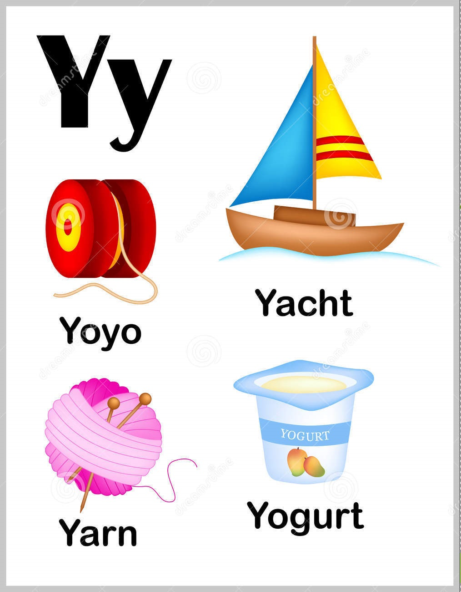

Aa
- Ant
- A small insect typically having a sting and living in a complex social colony with one or more breeding queens.
- Apple
- 1. The round fruit of a tree of the rose family, which typically has thin green or red skin and crisp flesh.
- 2. Apple Inc. is an American multinational technology company that specializes in consumer electronics, software and online services.
- Ambulance
- A vehicle equipped for taking sick or injured people to and from hospital, especially in emergencies.'we called an ambulance'
Page # 1
Bb
- Ball
- 1. A solid or hollow spherical or egg-shaped object that is kicked, thrown, or hit in a game.
- 2. (In cricket) a delivery of the ball by the bowler to the batsman.
- Butterfly
- A nectar-feeding insect with two pairs of large, typically brightly coloured wings that are covered with microscopic scales.
- Bee
- 1.A stinging winged insect which collects nectar and pollen, produces wax and honey, and lives in large communities.
- 2. an insect of a large group to which the honeybee belongs, including many solitary as well as social kinds.
- Balloons
- 1. A small coloured rubber bag which is inflated with air and then sealed at the neck, used as a child's toy or a decoration.
- 2. A large bag filled with hot air or gas to make it rise in the air, typically one carrying a basket for passengers.
Page # 2
Cc
- Chicken
- A domestic fowl kept for its eggs or meat, especially a young one.
- Candles
- 1. A cylinder or block of wax or tallow with a central wick which is lit to produce light as it burns.
- 2. A unit of luminous intensity, superseded by the candela.
- Carrot
- A tapering orange-coloured root eaten as a vegetable.
- Cake
- An item of soft sweet food made from a mixture of flour, fat, eggs, sugar, and other ingredients, baked and sometimes iced or decorated.
Page # 3
Dd
- Drum
- A percussion instrument sounded by being struck with sticks or the hands, typically cylindrical, barrel-shaped, or bowl-shaped, with a taut membrane over one or both ends.
- Dog
- A domesticated carnivorous mammal that typically has a long snout, an acute sense of smell, non-retractable claws, and a barking, howling, or whining voice.
- Duck
- A waterbird with a broad blunt bill, short legs, webbed feet, and a waddling gait.
- Dolphin
- A small gregarious toothed whale that typically has a beaklike snout and a curved fin on the back. Dolphins have become well known for their sociable nature and high intelligence.
Page # 4
Ee
- Egg
- An oval or round object laid by a female bird, reptile, fish, or invertebrate, usually containing a developing embryo. The eggs of birds are enclosed in a chalky shell, while those of reptiles are in a leathery membrane.
- Elephant
- A very large plant-eating mammal with a prehensile trunk, long curved ivory tusks, and large ears, native to Africa and southern Asia. It is the largest living land animal.
- Envelope
- A flat paper container with a sealable flap, used to enclose a letter or document.
- Eggplant
- The purple egg-shaped fruit of a tropical Old World plant, which is eaten as a vegetable; an aubergine.
Page # 5
Ff
- Flower
- The seed-bearing part of a plant, consisting of reproductive organs (stamens and carpels) that are typically surrounded by a brightly coloured corolla (petals) and a green calyx (sepals).
- Fish
- A limbless cold-blooded vertebrate animal with gills and fins living wholly in water.
- Fence
- A barrier, railing, or other upright structure, typically of wood or wire, enclosing an area of ground to prevent or control access or escape.
- Frog
- A tailless amphibian with a short squat body, moist smooth skin, and very long hind legs for leaping.
Page # 6
Gg
- Grapes
- A berry (typically green, purple, or black) growing in clusters on a grapevine, eaten as fruit and used in making wine.
- Guitar
- A stringed musical instrument, with a fretted fingerboard, typically incurved sides, and six or twelve strings, played by plucking or strumming with the fingers or a plectrum.
- Gift box
- A decorative box for putting a present in it.
Page # 7
Hh
- Hat
- A shaped covering for the head worn for warmth, as a fashion item, or as part of a uniform.
- House
- A building for human habitation, especially one that consists of a ground floor and one or more upper storeys.
- Hippopotamus
- A large thick-skinned semiaquatic African mammal, with massive jaws and large tusks.
- Hammer
- 1. A tool with a heavy metal head mounted at right angles at the end of a handle, used for jobs such as breaking things and driving in nails.
- 2. A metal ball of about 7 kg attached to a wire for throwing in an athletic contest.
Page # 8
Ii
- Ice
- Frozen water, a brittle transparent crystalline solid.
- Island
- A piece of land surrounded by water.
- Ice cream
- A soft, sweet frozen food made with milk and cream and typically flavoured with vanilla, fruit, or other ingredients.
- Igloo
- A type of dome-shaped shelter built from blocks of solid snow, traditionally used by Inuits.
Page # 9
Jj
- Jug
- A cylindrical container with a handle and a lip, used for holding and pouring liquids.
- Jelly beans
- A bean-shaped sweet with a gelatinous centre and a firm sugar coating.
- Jelly
- A fruit-flavoured dessert made by warming and then cooling a liquid containing gelatin in a mould or dish so that it sets into a semi-solid, somewhat elastic mass.
- Jelly fish
- A free-swimming marine coelenterate with a gelatinous bell- or saucer-shaped body that is typically transparent and has stinging tentacles around the edge.
Page # 10
Kk
- Kettle
- A container or device in which water is boiled, having a lid, spout, and handle.
- Kite
- A toy consisting of a light frame with thin material stretched over it, flown in the wind at the end of a long string.
- Knife
- An instrument composed of a blade fixed into a handle, used for cutting or as a weapon.
- Keyboard
- 1. A set of keys on a piano or similar musical instrument.
- 2. A panel of keys that operate a computer or typewriter.
Page # 11
Ll
- Leaf
- A flattened structure of a higher plant, typically green and blade-like, that is attached to a stem directly or via a stalk. Leaves are the main organs of photosynthesis and transpiration.
- Lion
- A large tawny-coloured cat that lives in prides, found in Africa and north-western India. The male has a flowing shaggy mane and takes little part in hunting, which is done cooperatively by the females.
- Ladybug
- A small beetle with a domed back, typically red or yellow with black spots; a ladybird.
- Lamp
- A device for giving light, either one consisting of an electric bulb together with its holder and shade or cover, or one burning gas or oil and consisting of a wick or mantle and a glass shade.
Page # 12
Mm
- Magnet
- A piece of iron or other material which has its component atoms so ordered that the material exhibits properties of magnetism, such as attracting other iron-containing objects or aligning itself in an external magnetic field.
- Mermaid
- A mythical sea creature with the head and trunk of a woman and the tail of a fish, conventionally depicted as beautiful and with long flowing golden hair.
- Moon
- The natural satellite of the earth, visible (chiefly at night) by reflected light from the sun.
- Mushroom
- A fungal growth that typically takes the form of a domed cap on a stalk, with gills on the underside of the cap.
Page # 13
Nn
- Nest
- A structure or place made or chosen by a bird for laying eggs and sheltering its young.
- Numbers
- An arithmetical value, expressed by a word, symbol, or figure, representing a particular quantity and used in counting and making calculations.
- Notes
- 1. In music, a note is a symbol denoting a musical sound.
- 2. A brief record of points or ideas written down as an aid to memory.
- Net
- A net is a device, made of fabric or rope stitched together, used to catch things such as fish or butterflies.
Page # 14
Oo
- Orange
- A large round juicy citrus fruit with a tough bright reddish-yellow rind.
- Owl
- A nocturnal bird of prey with large eyes, a facial disc, a hooked beak, and typically a loud hooting call.
- Onion
- A swollen edible bulb used as a vegetable, having a pungent taste and smell and composed of several concentric layers.
- Octopus
- A cephalopod mollusc with eight sucker-bearing arms, a soft body, strong beaklike jaws, and no internal shell.
Page # 15
Pp
- Pumpkin
- A large rounded orange-yellow fruit with a thick rind, the flesh of which can be used in sweet or savoury dishes.
- Panda
- A large bearlike mammal with characteristic black and white markings, native to certain mountain forests in China. It feeds almost entirely on bamboo and has become increasingly rare.
- Pear
- A yellowish- or brownish-green edible fruit that is typically narrow at the stalk and wider towards the base, with sweet, slightly gritty flesh.
- Palette
- A thin board or slab on which an artist lays and mixes colours.
Page # 16
- Queen
- The female ruler of an independent state, especially one who inherits the position by right of birth.
- Quilt
- A warm bed covering made of padding enclosed between layers of fabric and kept in place by lines of stitching, typically applied in a decorative design.
- Quetzal
- A bird of the trogon family, with iridescent green plumage and typically red underparts, found in the forests of tropical America.
Page # 17
Rr
- Rainbow
- An arch of colours visible in the sky, caused by the refraction and dispersion of the sun's light by rain or other water droplets in the atmosphere. The colours of the rainbow are generally said to be red, orange, yellow, green, blue, indigo, and violet.
- Rattle
- A thing used to make a rattling sound.
- Rose
- A prickly bush or shrub that typically bears red, pink, yellow, or white fragrant flowers, native to north temperate regions and widely grown as an ornamental.
- Rocket
- A cylindrical projectile that can be propelled to a great height or distance by the combustion of its contents, used typically as a firework or signal.
Page # 18
Ss
- Sun
- The star round which the earth orbits.
- Sandals
- A light shoe with either an openwork upper or straps attaching the sole to the foot.
- Star
- A fixed luminous point in the night sky which is a large, remote incandescent body like the sun.
- Snowman
- A representation of a human figure created with compressed snow.
Page # 19
Tt
- Target
- 1. A small round shield or buckler.
- 2. a person, object, or place selected as the aim of an attack.
- Tree
- A woody perennial plant, typically having a single stem or trunk growing to a considerable height and bearing lateral branches at some distance from the ground.

- Train
- A series of connected railway carriages or wagons moved by a locomotive or by integral motors.
Page # 20
Uu
- Utensil
- A tool, container, or other article, especially for household use.
- Umbrella
- A device consisting of a circular canopy of cloth on a folding metal frame supported by a central rod, used as protection against rain.
- U-turn
- The turning of a vehicle in a U-shaped course so as to face in the opposite direction.
- UFO
- A mysterious flying object seen in the sky for which it is claimed no orthodox scientific explanation can be found, often supposed to be a vehicle carrying extraterrestrials.
Page # 21
Vv
- Vulture
- A large bird of prey with the head and neck more or less bare of feathers, feeding chiefly on carrion and reputed to gather with others in anticipation of the death of a sick or injured animal or person.
- Vase
- A decorative container without handles, typically made of glass or china and used as an ornament or for displaying cut flowers.

- Van
- A medium-sized motor vehicle, typically without side windows in the rear part, for transporting goods.
- Vine
- A climbing or trailing woody-stemmed plant related to the grapevine.
Page # 22
Ww
- Watermelon
- The large fruit of a plant of the gourd family, with smooth green skin, red pulp, and watery juice.
- Wand
- A long, thin slender stick or rod used by conjurers and magicians.
- Whale
- A very large marine mammal with a streamlined hairless body, a horizontal tail fin, and a blowhole on top of the head for breathing.
- Window
- An opening in the wall or roof of a building or vehicle, fitted with glass in a frame to admit light or air and allow people to see out.
Page # 23
Xx
- Xylophone
- A musical instrument played by striking a row of wooden bars of graduated length with one or more small wooden or plastic beaters.
- Xmas
- An evergreen tree, often a pine or a fir, decorated with lights and ornaments as a part of Christmas festivities.
- X-ray
- A photographic or digital image of the internal composition of something, especially a part of the body, produced by X-rays being passed through it and being absorbed to different degrees by different materials.
Page # 24
Yy
- Yoyo
- A toy consisting of a pair of joined discs with a deep groove between them in which string is attached and wound, which can be spun alternately downward and upward by its weight and momentum as the string unwinds and rewinds.
- Yatch
- A medium-sized sailing boat equipped for cruising or racing.

- Yarn
- Spun thread used for knitting, weaving, or sewing.
- Yogurt
- A semi-solid food prepared from milk fermented by added bacteria, often sweetened and flavoured.
Page # 25
Zz
- Zucchini
- The immature fruit of a vegetable marrow; a courgette.
- Zigzag
- A line or course having abrupt alternate right and left turns.
- Zero
- No quantity or number; nought; the figure 0.
- Zipper
- A device consisting of two flexible strips of metal or plastic with interlocking projections closed or opened by pulling a slide along them, used to fasten garments, bags, and other items.